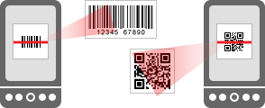

La aplicación oficial de Android del proyecto de código abierto ZXing:
http://github.com/zxing/zxing
Barcode Scanner utiliza la cámara de su móvil para leer códigos de barras y buscar información sobre los productos como los precios y las revisiones.

También lee los códigos de barras 2D, como los Códigos QR y Data Matrix. Estos pueden contener enlaces a otros sitios web, información de contacto, como números de teléfono y direcciones de correo electrónico y mucho más.
Traducido por Google Translate.